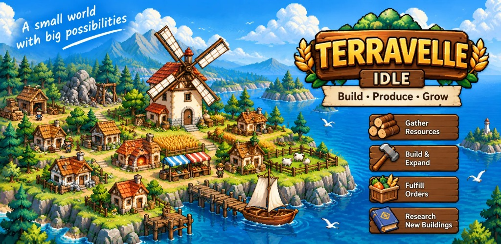

Terravelle – Idle Ascension
Eine kleine Welt mit großen Möglichkeiten. Baue deine eigene Insel vom ersten gefällten Baum bis zum blühenden Handelsdorf.
- Ressourcen sammelnHolzfäller, Steinbrüche, Felder und Minen liefern die Grundlage deiner Wirtschaft.
- Bauen & erweiternVerbinde Mühlen, Bäckereien, Schmieden und mehr zu Produktionsketten.
- Aufträge erfüllenBeliefere deine Bewohner und sammle Anerkennung.
- Forschen & aufsteigenErforsche neue Gebäude und starte mit Prestige auf einer größeren Insel neu.
Deine Insel arbeitet auch weiter, wenn du offline bist. Mit Google Play Games kannst du deinen Spielstand in der Cloud sichern und dich in den Ranglisten mit anderen Spielern vergleichen.
Terravelle ist ein Spiel von NRM Games für Android. Fragen und Feedback: terravelle.game@gmail.com